Wireless Sensor Node - Solar Kit is an easy to use bundle created for experimenting with XBee and XBee compatible standalone wireless modules like RFBee and Wifi Bee. Every maker is confronted with the question of selection the right set of components to build Wireless Sensor Node. Wireless Sensor Node - Solar Kit fills this place very appropriately. The Grove - XBee Carrier provides LDO power supply, charger for LiPo Battery and programming port for XBee compatible modules. The Solar Panel provides the required charging voltage in remote areas. The 500 mAH LiPo Battery provides the backup when the Sun is away. A properly designed and configured wireless module could provide very long hours of usage. For this, put the node to sleep when not transmitting the sensor value. This kit comes with a perfectly made Transparent Box , sets of Screws and Plastic Rivets.
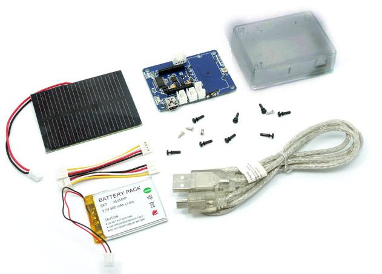
| Component | Image | Description | Quantity |
|---|---|---|---|
| Grove - XBee Carrier v0.9b | 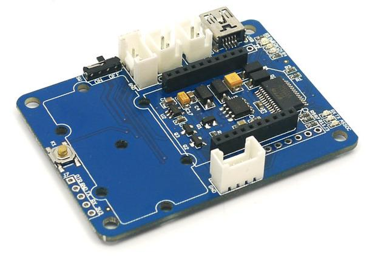 | Base board for XBee nodes | 1 |
| Transparent Box | 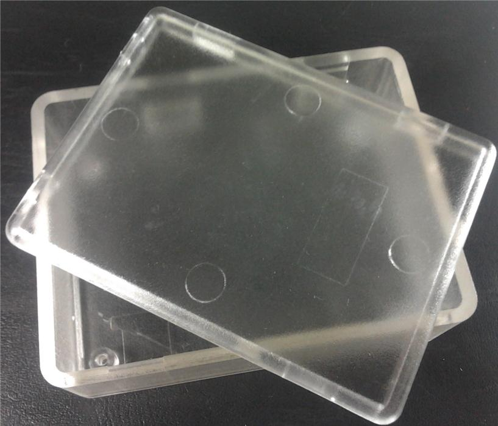 | Enclosure for Node Components | 1 |
| 0.5 W - 55x70 mm Solar Panel | 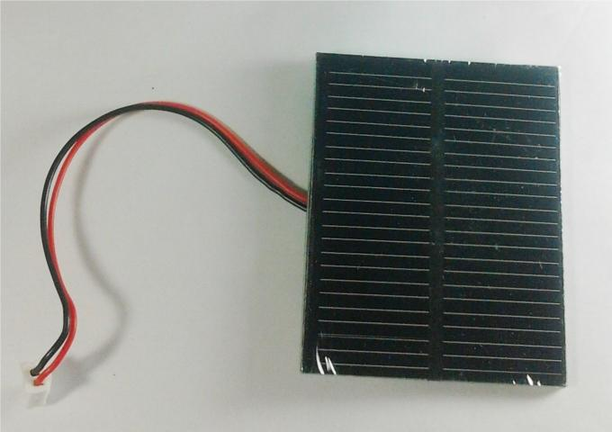 | Charging Power Supply | 1 |
| 5 cm Grove Wire | 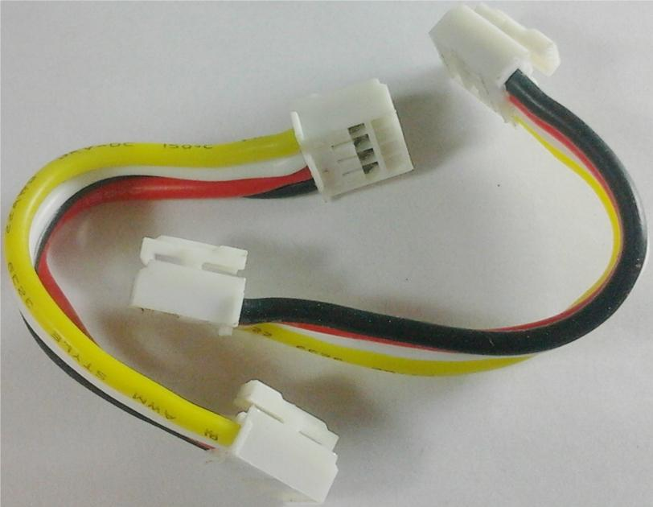 | 4 Wire Cable to attach Grove modules to Grove - XBee Carrier | 2 |
| Mini USB Cable | 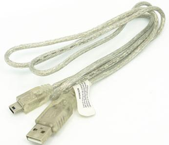 | Programming Cable | 1 |
| XK 353545 500mAH LiPo Battery | 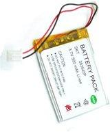 | Lithium Ion Battery | 1 |
| KA 2*6 Screws | 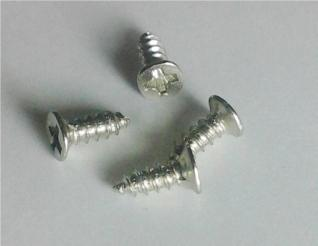 | Metal Screws for fixing Grove - XBee Carrier to Box | 4 |
| 2064 Rivets | 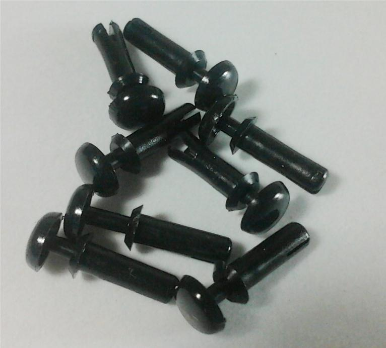 | Plastic rivets for attaching Grove modules to Grove - XBee Carrier | 8 |
| Item | Specification |
|---|---|
| Grove - XBee Carrier I/O Logic | 3.3V |
| LiPo Battery | 500mAH @ 3.7V |
| Solar Panel | 0.5Watt @ 5.5V |
This section provides a Step-by-Step construction of a Wireless Sensor Node. Images are only for illustrating the procedure of that step. We have used two different setups of Grove - Xbee Carrier and Grove modules. So, just follow the procedure.
| Step | Procedure | Illustration |
|---|---|---|
| 1 | Open the box as shown | 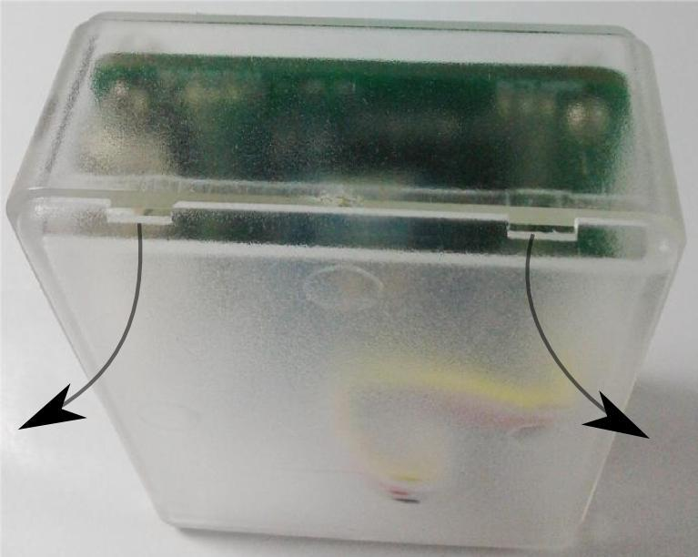 |
| 1.1 | Place the LiPo Battery inside the Box | 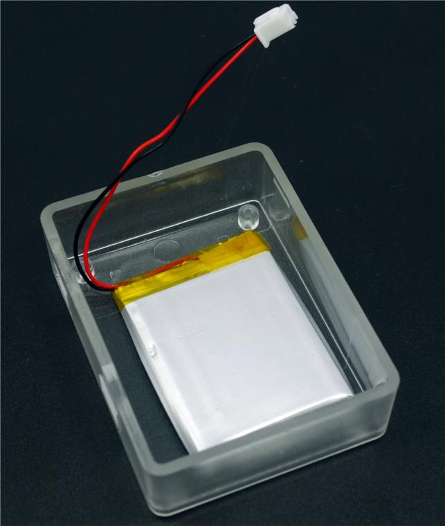 |
| 1.2 | Insert the Solar Panel Connector | 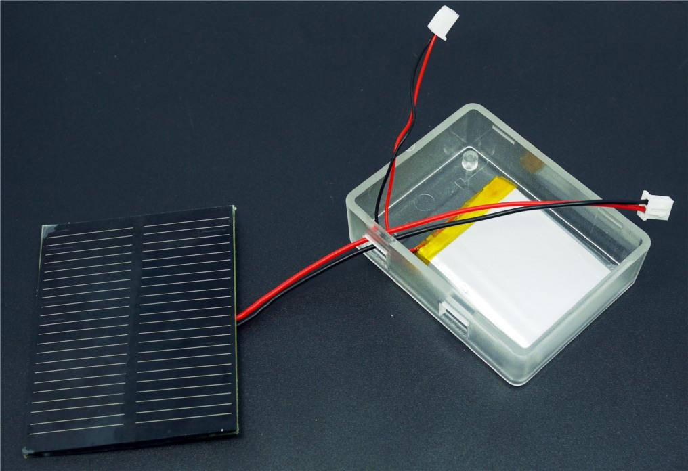 |
| 1.3 | Open the plastic rivet | 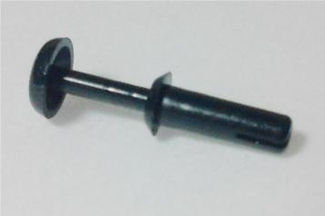 |
| 1.4 | An opened rivet looks like this | 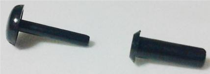 |
| 1.5 | Attach a Grove module with the help of Rivets. Keep the Grove - Bee Carrier as shown inside the transparent box. | 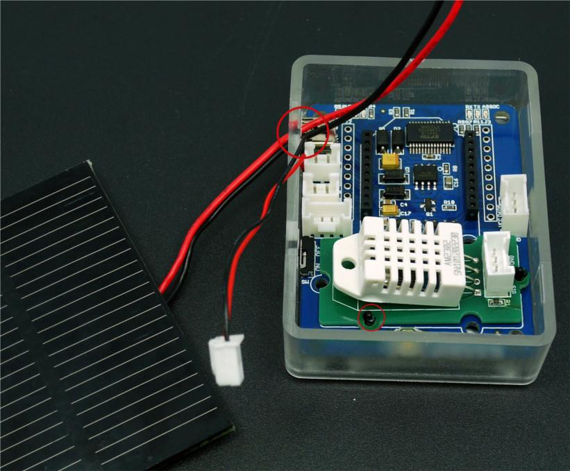 |
| 2.3 | A fully closed rivet looks like this | 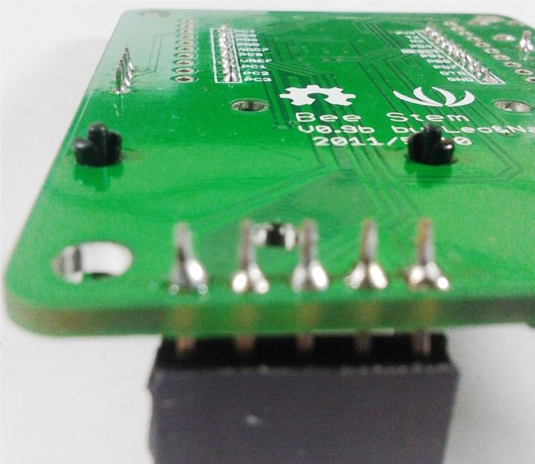 |
| 3.0 | Attach the 4-Wire Grove Cable, Battery and Solar Panel Connectors to Grove - XBee Carrier | 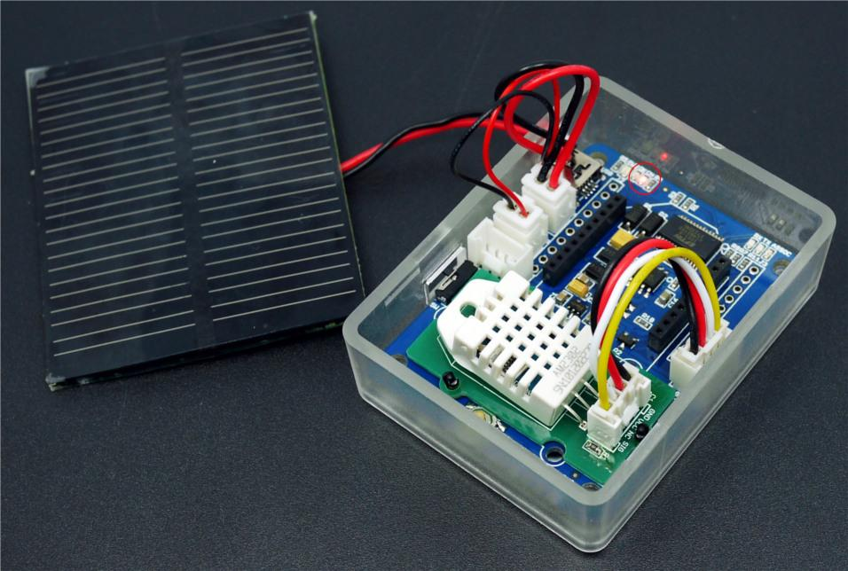 |
| 4.0 | Insert XBee module. Fix the Screw at four corners | 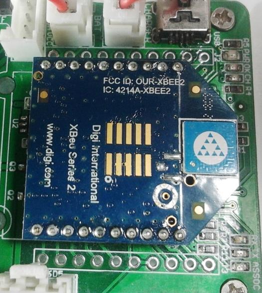 |
| 5.0 | Close the lid. USB socket and Power Switch are accessible from the side | 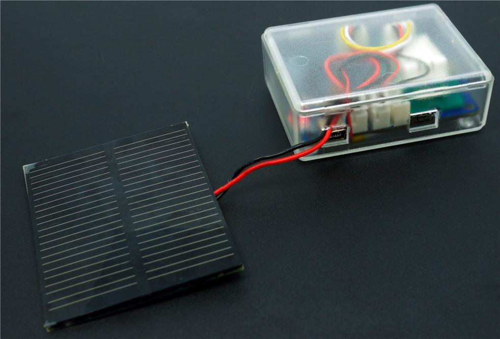 |
| 6.0 | Connect the USB cable and program the XBee | 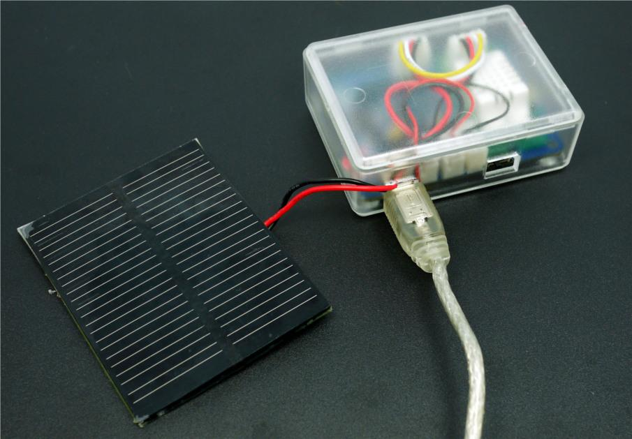 |
Information on how to setup / program Bee Modules are available in
If you have questions or other better design ideas, you can go to our forum or wish to discuss.
| Revision | Descriptions | Release |
|---|---|---|
| v0.9b | Initial public release | 9-Aug-2011 |
Bug Tracker is the place you can publish any bugs you think you might have found during use. Please write down what you have to say, your answers will help us improve our products.
We appreciate if you could write addition ideas and demonstration for this kit.
The resources need to be downloaded, like Eagle file, Demo code, project or other datasheet.
This documentation is licensed under the Creative Commons Attribution-ShareAlike License 3.0. Source code and libraries are licensed under GPL/LGPL, see source code files for details.
Links to external webpages which provide more application ideas, documents/datasheet or software libraries.
Copyright (c) 2008-2016 Seeed Development Limited (www.seeedstudio.com / www.seeed.cc)